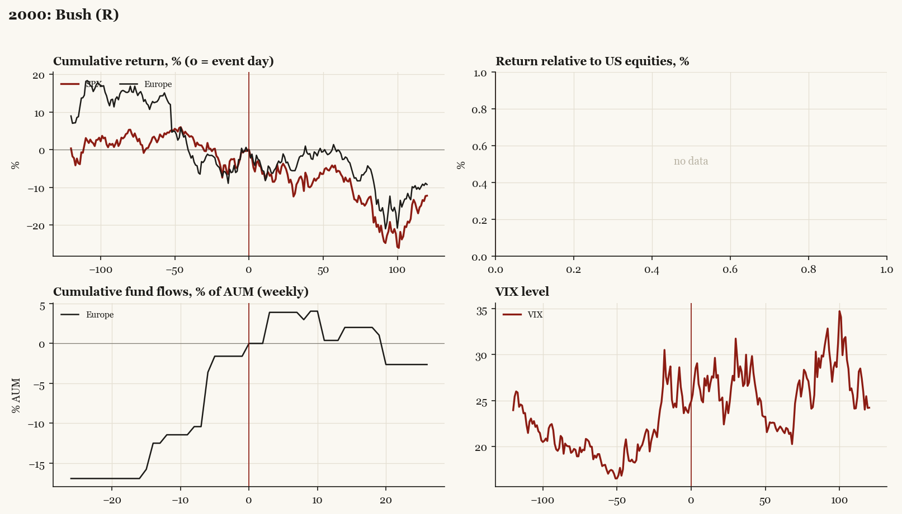

2000: Bush (R)
Presidential election, 2000-11-07 - winner Bush (R), party flip, day-before odds of winner ~50%. Result known only 2000-12-13.

What moved
- Equities ran -4.1% over the 60 trading days into the event.
- The S&P 500 moved -5.6% over the following 60 trading days and -12.2% over 120.
- Cumulative net flows into Europe funds: +0.4% of assets in the 13 weeks after (vs +12.5% in the 13 weeks before).
- Implied volatility moved +1.1 VIX points across the event (from 24.5).
- Contested 36 days (Bush v. Gore 12-12, Gore concession 12-13); dot-com unwind backdrop
Detail
| series |
runup pre-60d |
+20d |
+60d |
+120d |
| SPX |
-4.1% |
-5.8% |
-5.6% |
-12.2% |
| Europe |
-14.3% |
-3.0% |
-0.0% |
-9.2% |
| Japan |
-5.6% |
-9.0% |
-18.7% |
-12.5% |